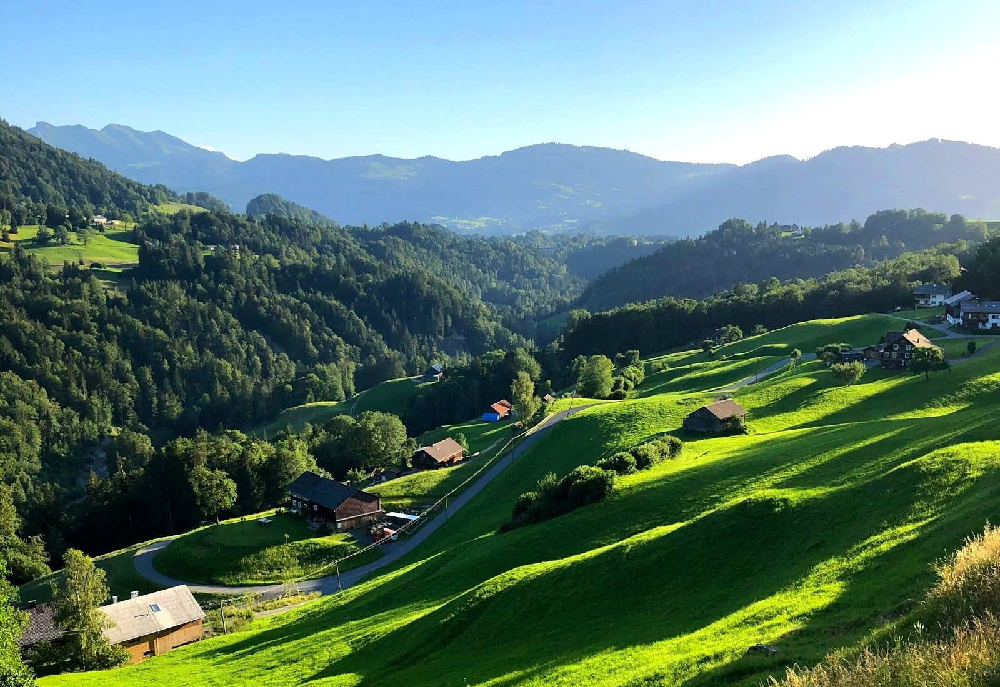
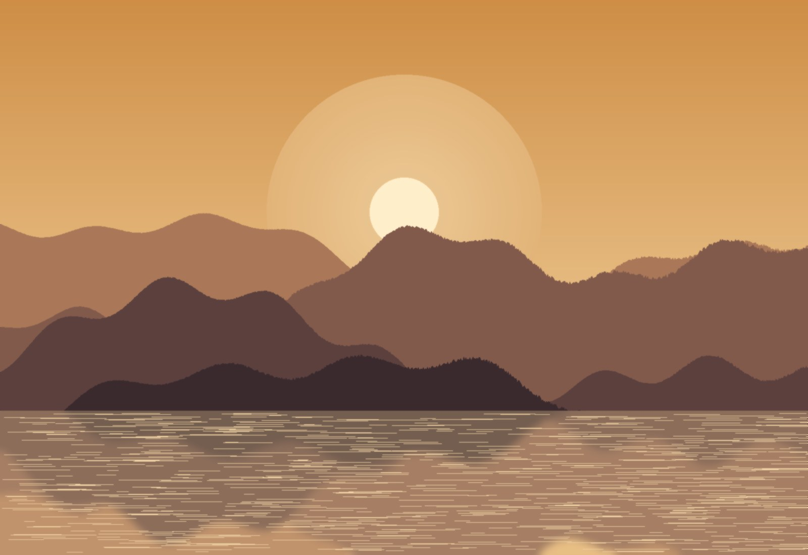
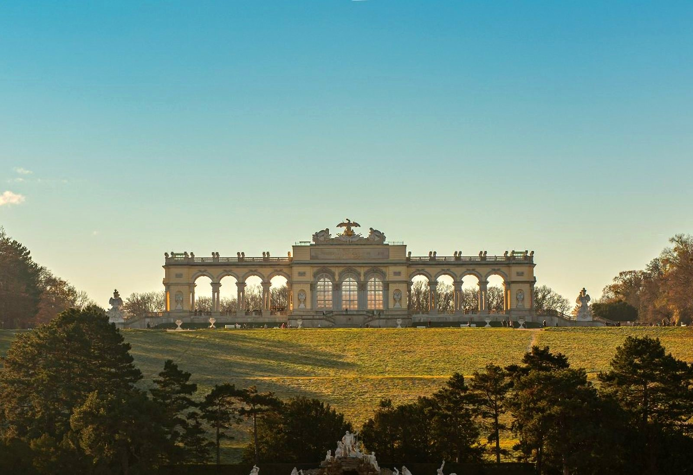

Natursalze
Persisches Steinsalz in Lebensmittel- und Dekorqualität.
- Rosa Kristallsalz
- Blausalz (Semnan)
- Salzlampen & Deko-Salzstein
Borhan Trading steht für Produkte, die die Natur selbst geschaffen hat: naturbelassene Lebensmittel, Natursalze und Energiesteine — zu 100 % natürlich, ohne Chemie und ohne künstliche Zusätze. Für Menschen, die bewusst und gesund leben möchten.
Produkte ansehenUnser Sortiment wächst laufend. Jeder Bereich steht für eine eigene Lieferkette mit geprüften Partnern vor Ort.
Persisches Steinsalz in Lebensmittel- und Dekorqualität.
Natürliche Mineralien und Edelsteine — traditionell für Harmonie und Wohlbefinden geschätzt.
Reine, naturbelassene Spezialitäten aus kontrollierten Quellen.
In Vorbereitung: Produkte rund um Yoga, Meditation und natürliche Energiearbeit — für Körper und Geist im Gleichgewicht.
Unser Standort im Salzkammergut — zwischen Attersee und Alpen — verbindet persische Herkunft mit österreichischer Verlässlichkeit.



Wir glauben, dass die besten Produkte nicht im Labor entstehen, sondern in der Natur. Deshalb führen wir ausschließlich Waren, die naturbelassen und frei von chemischen Zusätzen sind — vom Salzkristall bis zur Dattel.
Jede Lieferung begleiten wir von der Auswahl beim Erzeuger bis zur Übergabe in Europa. So wissen Sie genau, woher Ihr Produkt kommt — und dass nichts hinzugefügt wurde, was nicht hineingehört.